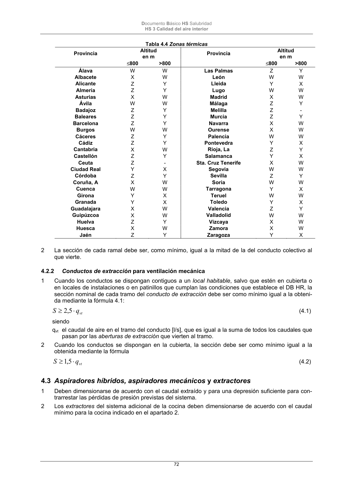

DB-HS Salubridad · edición 2022-06-14 · capa oficial
Documento DB-HS-oficial · SHA-256 del PDF 68df3caacc95f71aee2ec1ba7b2c65ae66155c21e3a8785521b8fdd4fd640d3b
Página física 72 de 184.
Copia fiel del PDF fuente · Fuente oficial
Ficha de la disposición en la fuente oficial
Formato: Texto de la página (Markdown)
Documento Básico HS Salubridad HS 3 Calidad del aire interior 72 Tabla 4.4 Zonas térmicas Provincia Altitud en m Provincia Altitud en m 800 >800 800 >800 Álava W W Las Palmas Z Y Albacete X W León W W Alicante Z Y Lleida Y X Almería Z Y Lugo W W Asturias X W Madrid X W Ávila W W Málaga Z Y Badajoz Z Y Melilla Z - Baleares Z Y Murcia Z Y Barcelona Z Y Navarra X W Burgos W W Ourense X W Cáceres Z Y Palencia W W Cádiz Z Y Pontevedra Y X Cantabria X W Rioja, La Z Y Castellón Z Y Salamanca Y X Ceuta Z - Sta. Cruz Tenerife X W Ciudad Real Y X Segovia W W Córdoba Z Y Sevilla Z Y Coruña, A X W Soria W W Cuenca W W Tarragona Y X Girona Y X Teruel W W Granada Y X Toledo Y X Guadalajara X W Valencia Z Y Guipúzcoa X W Valladolid W W Huelva Z Y Vizcaya X W Huesca X W Zamora X W Jaén Z Y Zaragoza Y X 2 La sección de cada ramal debe ser, como mínimo, igual a la mitad de la del conducto colectivo al que vierte. 4.2.2 Conductos de extracción para ventilación mecánica 1 Cuando los conductos se dispongan contiguos a un local habitable, salvo que estén en cubierta o en locales de instalaciones o en patinillos que cumplan las condiciones que establece el DB HR, la sección nominal de cada tramo del conducto de extracción debe ser como mínimo igual a la obteni- da mediante la fórmula 4.1: vt q S 5,2 (4.1) siendo qvt el caudal de aire en el tramo del conducto [l/s], que es igual a la suma de todos los caudales que pasan por las aberturas de extracción que vierten al tramo. 2 Cuando los conductos se dispongan en la cubierta, la sección debe ser como mínimo igual a la obtenida mediante la fórmula vt q S 5,1 (4.2) 4.3 Aspiradores híbridos, aspiradores mecánicos y extractores 1 Deben dimensionarse de acuerdo con el caudal extraído y para una depresión suficiente para con- trarrestar las pérdidas de presión previstas del sistema. 2 Los extractores del sistema adicional de la cocina deben dimensionarse de acuerdo con el caudal mínimo para la cocina indicado en el apartado 2.

Datos candidatos: compruebe celdas y notas en el PDF.